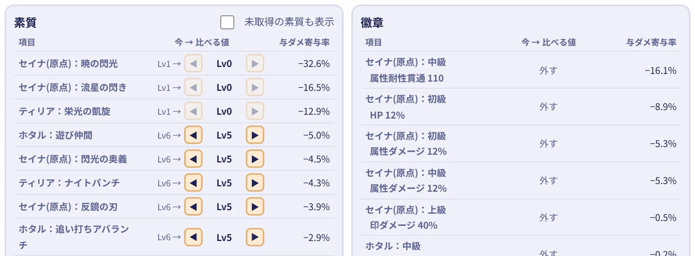
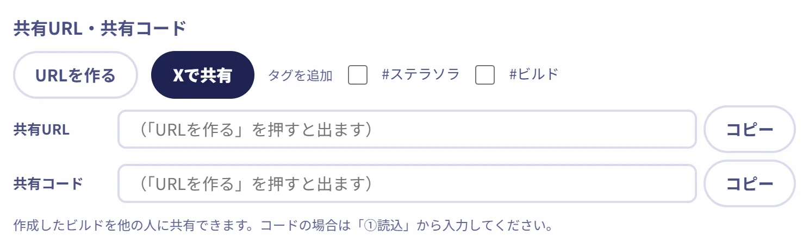

ビルドを作ってシミュレートする
編成単位で何を上げたら、下げたらどのくらいダメージが変わるのかを計算できるので、どの要素を優先して上げると強くなれるのかなどの予想が出来るようになります。ビルドに名前をつけてブラウザに保存できるので、いろんなビルドを組み立てて必要な時に確認できます。

自作のステラソラの非公式ツールを置いてます！
巡遊者・素質・徽章・ロスレコ・敵などのビルド要素を詰め込んで、ダメージ計算を行うツールです。
編成単位で何を上げたら、下げたらどのくらいダメージが変わるのかを計算できるので、どの要素を優先して上げると強くなれるのかなどの予想が出来るようになります。ビルドに名前をつけてブラウザに保存できるので、いろんなビルドを組み立てて必要な時に確認できます。

入力したビルドを短縮URLにする機能があるので、入力したデータを他の人に渡したり、もらったりすることができます。状態を伝えることができれば的確なアドバイスをもらいやすいかも。ゲーム内の素質プリセットコードも発行できます。
